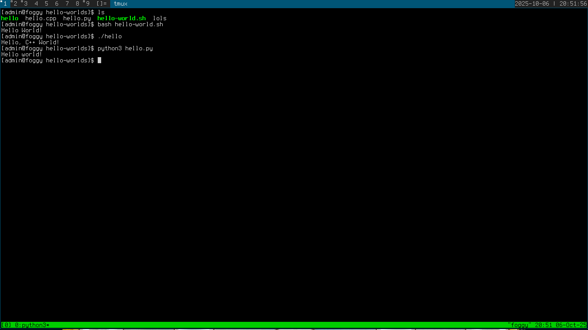
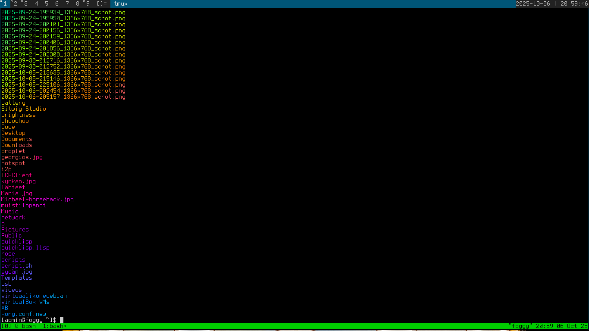

Kirjoitin Hello World -ohjelman kolmella kielellä käyttäen apunani internetin lähteitä (Lähteet sivun lopussa).
Valintani olivat bash, C++ ja Python.
Loin uudet tiedostot kullekin ohjelmalle neovim-tekstieditorilla.
Bash:
echo "Hello World!"
C++:
int main() {
std::cout << "Hello, C++ World!" << std::endl;
return 0;
}
Compilasin C++ -koodin komennolla:
g++ hello.cpp -o helloPython:
print("Hello world!")
Testasin että kaikki toimivat:  Seuraavaksi loin uuden lyhyen lols-nimisen bash-scriptin joka putkittaa ls-komennon lolcat-nimiseen ohjelmaan:ls | lolcat
Annoin oikeudet ajaa ohjelmaa komennolla:
chmod a+x lols
Kopioin scriptin /usr/local/bin -hakemistoon jotta sen voisi ajaa missä tahansa sijainnissa:
sudo cp lols /usr/local/bin/
Lopuksi testasin ajaa lols kotihakemistossani:
lols
Toimi!
Lähteet:
Karvinen, Tero 2025 Tehtävänanto h7 https://terokarvinen.com/linux-palvelimet/
Vultr 2024, Python Program to Print Hello world! https://docs.vultr.com/python/examples/print-hello-world
Heinonen, Johanna 2025 Shell Scripting Basics https://github.com/johannaheinonen/johanna-test-repo/blob/main/linux-01102025.md/